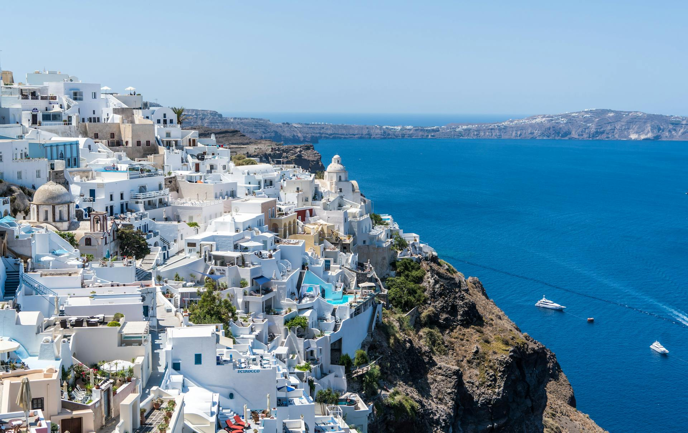
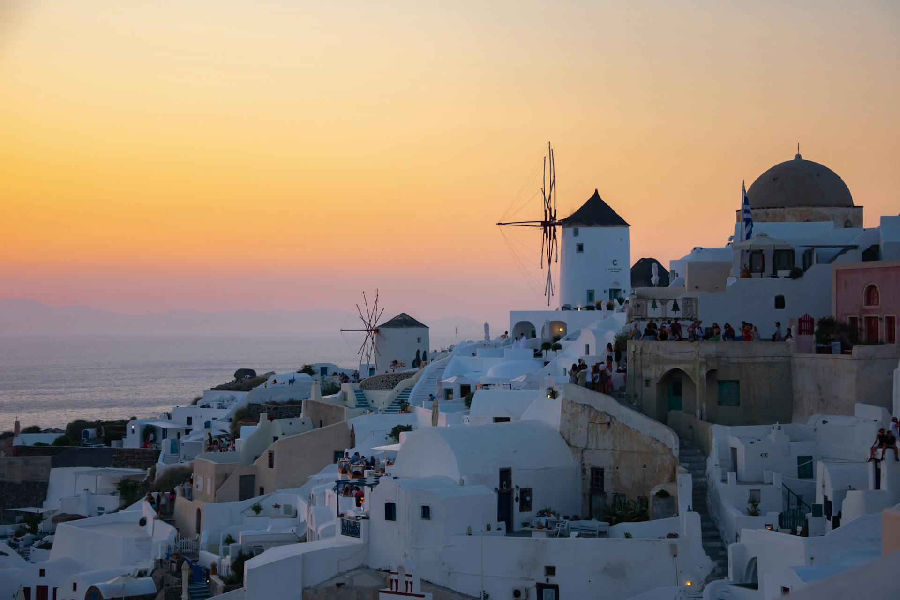
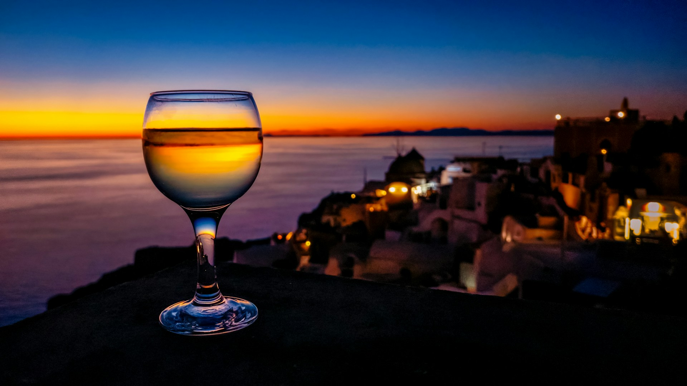
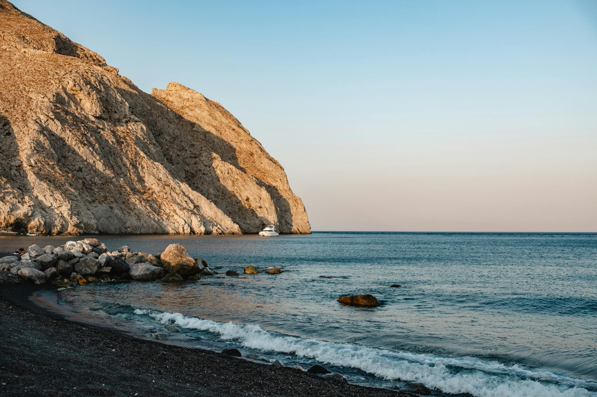

As maravilhas de Santorini
Arquitetura única
A arquitetura de Santorini é caracterizada por casas brancas com cúpulas azuis, localizadas em penhascos íngremes. Esse estilo tradicional cicládico, com ruas estreitas, resulta em paisagens icônicas e encantadoras.
Por do sol
O pôr do sol de Santorini é famoso por suas vistas deslumbrantes sobre o Mar Egeu, com o céu se iluminando em tons de laranja e rosa, especialmente apreciado das vilas de Oia e Fira.
Vinhos vulcânicos
Os vinhos vulcânicos de Santorini são únicos por crescerem em solo rico em minerais vulcânicos. O mais famoso é o Assyrtiko, conhecido por sua acidez, frescor e sabor mineral distinto, refletindo o terroir especial da ilha.
Praias vulcânicas
As praias vulcânicas de Santorini são famosas por suas areias negras, vermelhas e brancas, formadas por lava vulcânica, e suas águas cristalinas, criando paisagens impressionantes e únicas.
Sobre Santorini
Santorini, uma joia no Mar Egeu, é renomada por suas vistas deslumbrantes, pôr do sol espetacular e rica história. Suas icônicas casas brancas com cúpulas azuis, aninhadas nos penhascos, e suas praias vulcânicas distintas criam uma paisagem única. Com uma atmosfera romântica incomparável, Santorini proporciona uma experiência memorável para cada visitante, unindo beleza natural e encanto histórico.
Saiba mais